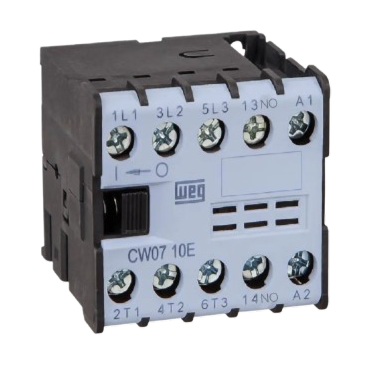

Contactor
Também chamado de contator, é usado para ligar e desligar equipamentos de alta potência de forma segura e eficiente. Alguns exemplos de equipamentos são: aquecedores, motores elétricos e sistemas de iluminação.
Há dois tipos de contatores:
✦ Contatores de potência: Servem para abrir e fechar circuitos de equipamentos que puxam muita energia e correntes elétricas altas, como os motores.
✦ Contatores auxiliares: Eles trabalham apenas com correntes bem baixas e servem para montar a lógica de funcionamento do painel (fazer combinações, criar travas de segurança ou acionar sinalizadores).
Classes de emprego:
O dispositivo deve ser escolhido de acordo com o tipo de aparelho em que ele será ligado e o ritmo de trabalho. As principais categorias são:
✦ AC1: Para aparelhos simples, como aquecedores e resistências. O desgaste ao desligar é mínimo, por conta da corrente de energia estável.
✦ AC2: Usado para ligar e desligar motores de corrente contínua específicos.
✦ AC3: O mais comum no uso do dia a dia, utilizado para motores elétricos em condições normais, como bombas de águas e elevadores. É feita para aguentar picos de partida bem altos.
✦ AC4: É usada em trabalhos brutos, quando é necessário que o motor ligue, desligue, de trancos ou inverta o sentido a todo momento, como em guindastes. Isso gera correntes muito altas e muito desgaste.
Além dessas, existem as DC1 e DC5, fabricadas exclusivamente para sistemas que funcionam com corrente contínua.
